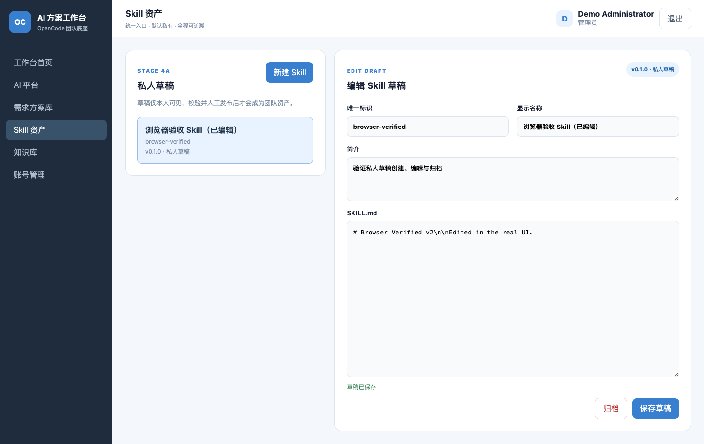

用户获得什么
创建、切换、编辑和归档自己的 `SKILL.md` 草稿，并看到明确的版本与私有状态。
OpenCode 团队 AI 工作台 · Stage 4A
本阶段把 Skill 从服务器目录里的只读展示，升级为受账号、权限、版本和审计约束的私人草稿产品。草稿默认私有，不会在未经校验和人工确认时进入团队资产或 OpenCode 发现目录。
Mac 应用级验收：PASS_WITH_NOTES创建、切换、编辑和归档自己的 `SKILL.md` 草稿，并看到明确的版本与私有状态。
SQLite 事实源、所有权隔离、管理员治理、安全审计和面向后续发布安装的生命周期模型。
校验、发布、安装、OpenCode 发现、升级回滚和 Linux 生产上线仍属于后续阶段。
227 通过、0 失败；2 个真实环境专项用例按默认策略跳过。
1440×900 与 390×844 均完成真实创建、编辑和归档流程。
密钥扫描无发现，横向溢出、Console Error 和 Page Error 均为 0。

Stage 4B 将实现 frontmatter、目录文件、安全规则、敏感信息、路径与危险命令校验，并把结果持久化。任何真实运行验证继续通过受限 OpenCode Runtime；4A 完成不等于 Skill 已可向团队发布，也不等于 Linux 生产就绪。
证据目录：docs/dev-loop-runs/2026-09-09-stage-4-skill-center/